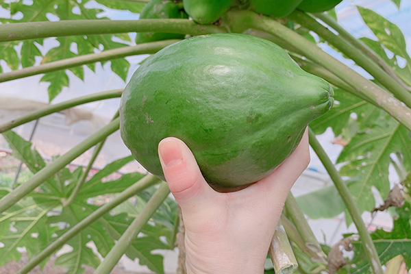

青パパイヤとは？

未熟パパイヤが持つ驚くべき力
青パパイヤとは、熟す前の未熟なパパイヤ果実のこと。成熟したオレンジ色のパパイヤとは異なり、まだ緑色の状態で収穫された青パパイヤには、「パパイン酵素」と呼ばれる強力な酵素が豊富に含まれています。
この酵素は、タンパク質を分解する力が非常に強く、「酵素の王様」とも呼ばれています。消化を助けるだけでなく、古くなった細胞を分解したり、コラーゲンの生成を促進したりと、美容と健康にうれしい効果が期待できます。
国産で新鮮
沖縄の農園で大切に育てられた青パパイヤを使用。収穫から加工まで一貫して管理しています。
無農薬・品質管理
化学肥料や農薬を使わず、有機栽培にこだわって育てています。